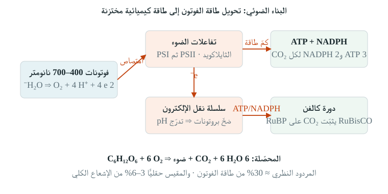

البناء الضوئي
Photosynthesis
عملية تحوّل بها النباتات الخضراء وبعض الكائنات الأخرى طاقة الضوء إلى طاقة كيميائية مخزَّنة في مركبات عضوية غنية بالطاقة.
البناء الضوئي هو المسار الذي تحوّل به النباتات الخضراء والطحالب وبعض أنواع البكتيريا الطاقة الضوئية إلى طاقة كيميائية. يبدأ بامتصاص الضوء في صانعات اليخضور، حيث يُستخدم الماء وثاني أكسيد الكربون والمعادن الداخلة إلى النبات مادّةً أوّلية. تُنتج تفاعلات الضوء مركّبات ناقلة للطاقة والهيدروجين، ثم تُستهلك هذه المركّبات في تثبيت ثاني أكسيد الكربون وتحويله إلى سكريات ومركبات عضوية أخرى. الأكسجين الجزيئي ناتج ثانوي عن شطر الماء في تفاعلات الضوء، وهو ما جعل تراكمه في الغلاف الجوي ممكنًا على مدى تاريخ الأرض. كل كتلة حيوية نراها اليوم تقريبًا تعود في أصلها إلى هذه العملية: الضوء يصبح غذاءً.
الآلية
كيف يحدث الأمر على مستوى الجسيمات أو المتغيّرات المباشرة
البناء الضوئي سلسلة نقل إلكترون لا معادلة واحدة. يمتصّ الماء إلكترونات في النظام الضوئي الثاني بعد إثارة كروفيل a بفوتون، فتُطلق الإلكترونات مسارًا عبر البلاستوكينون والسيتوكروم b₆f والنظام الضوئي الأول، ويُستخدم انحدار طاقتها لضخّ بروتونات داخل الثايلاكويد. يعود التدرّج عبر ATP synthase فيُصنَّع ATP، ويُختزل NADP⁺ إلى NADPH. السلسلة تُنتج أيضًا قوة اختزال تُستهلك في دورة كالفن حيث يُثبَّت CO₂ على RuBP بإنزيم RuBisCO.
الأرقام والوحدات
العلاقات والوحدات والنطاقات العددية التي تسند الشرح
الفوتونات الفعّالة في المدى 400–700 nm، وطاقة فوتون عند 680 nm تساوي 2.92×10⁻¹⁹ J (1.82 eV). لإنتاج مول واحد من O₂ يلزم 8 فوتونات على الأقل، وأكثر منها فعليًّا بسبب فقدان الطاقة. الميزان الكمّي: 3 ATP و2 NADPH لكل CO₂ في C₃، أي 9 ATP و6 NADPH للغليسرالديهيد-3-فوسفات الواحد. المردود النظري الأقصى ≈30%، والمقيس حقليًّا 3–6% من الإشعاع الشمسي الكلي، والفرق يذهب إلى التنفّس والإشعاع الحراري وحدود الانتشار.
الفرق الدقيق
المفهوم الملتبس الذي يُخلَط به، وأين ينفصلان
لا تُخلط التفاعلات الضوئية بدورة كالفن: الأولى تُحوّل طاقة الفوتون إلى طاقة كيميائية مختزنة (ATP/NADPH) وتحدث في غشاء الثايلاكويد، والثانية تُثبّت الكربون وتحدث في الحشوة ولا تحتاج ضوءًا مباشرًا لكنها تحتاج منتجات الضوء. ولا تُخلط بالتنفّس: التنفّس يُحرِّر الطاقة من السكريات في المتقدرات ويستهلك O₂، والبناء الضوئي يختزلها ويُطلق O₂؛ وهما يعملان معًا بلا تعارض فوريّ، والتنفّس يظلّ مستمرًّا في الضوء.
حدود التعريف
أين ينكسر التعريف أو النموذج وما الذي لا يفسّره
الحدّ الحقيقي ليس ضوءًا بل ثاني أكسيد الكربون وRuBisCO نفسه: الإنزيم بطيء ويقبل O₂ أيضًا فيُنشئ التنفّس الضوئي الذي يهدر 20–30% من الكربون المثبَّت في المحاصيل C₃ الحارة. وفي C₄ تسبق الحشوة الورقية تثبيت الكربون في خلاياها الغمدية فترتفع الكفاءة عند الحرارة والجفاف. ولا ينطبق النموذج نفسه على البكتيريا الضوئية والطحالب: تستخدم أنظمة ضوئية مختلفة ومانحات إلكترون مختلفة.

| الكمية | القيمة | المصدر |
|---|---|---|
| بدء تراكم الأكسجين الجزيئي في الغلاف الجوي | منذ نحو 2.4 مليار سنة | [1] |
المصادر
- 1 Photosynthesis — Encyclopaedia Britannica. www.britannica.com/science/photosynthesis · اطُّلع عليه 2026-11-13
استشهد بهذا المصطلح
الصيغتان مبنيتان من بيانات الصفحة نفسها: العنوان والتاريخ ورابط النسخة المنشورة.
البناء الضوئي (Photosynthesis). (2026). ديوان المعرفة — انفراد. https://infiradev.com/diwan/terms/photosynthesis.html
@misc{photosynthesis2026,
title = {البناء الضوئي (Photosynthesis)},
howpublished = {{ديوان المعرفة — انفراد} — مرجع علمي عربي},
year = {2026},
url = {https://infiradev.com/diwan/terms/photosynthesis.html},
note = {مراجعة علمية: hermes (تأسيس المستودع — مقابل المصدر) · 2026-11-13}
}
راجعه: hermes (تأسيس المستودع — مقابل المصدر) · 2026-11-13 · آخر تحديث 2026-11-13